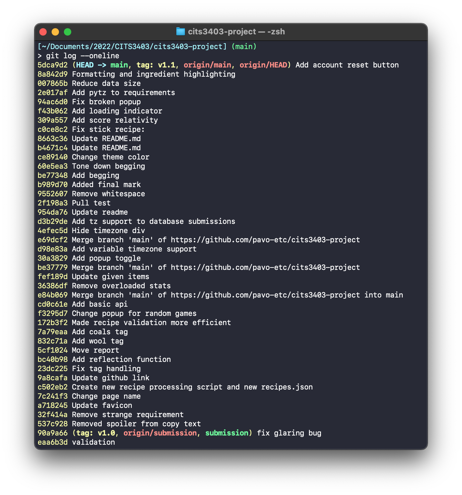
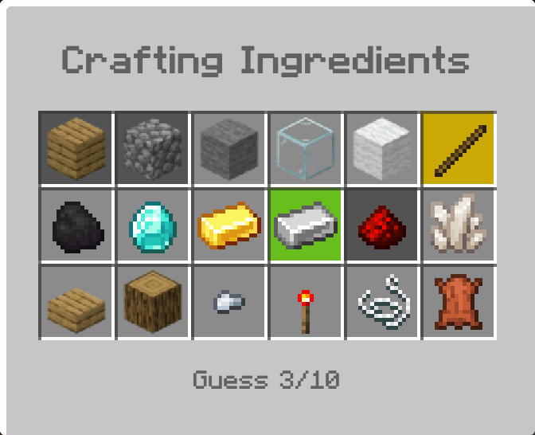

Minecraftle is a simple game written for my introductory web development unit (CITS3403 with Tim French, would recommend) in 2022 Semester 1. The project was submitted (and completed) on May 23, but since then I have been periodically updating it with "nice to have" features that we didn't manage to get in before the deadline. After 8 months I am happy to label this Minecraftle version 1.1, with changes stemming from three main motivations: usability, optimisation, and revenge.

Usability
537c928: Made the emoji summary more vague, so a correct guess shows up as 9 green squares no matter what, rather than giving away the shape of the final solution.
Before and after comparison
Before:Minecraftle 24/05/2022
⬜⬜⬜
⬜⬜⬜
⬜⬜⬜
🟩🟩🟨
⬜🟩⬜
⬜🟩⬜
🟩🟩⬜
🟩🟩⬜
⬜🟩⬜
Minecraftle 25/05/2022 3/10
⬜🟩⬜
⬜⬜⬜
⬜⬜⬜
⬜⬜⬜
🟩🟩⬜
🟨⬜⬜
🟩🟩🟩
🟩🟩🟩
🟩🟩🟩
23dc225: Added check so that only valid Minecraft recipes could be submitted as guesses.
bc40b98: Added proper support for horizontal reflections of recipes.
f3295d7 & 36386df: Made end-of-game popup display different text for Random games.
fef189d: Changed the given items for a more interesting set of possible recipes.
30a3829: Made end-of-game popup togglable.
f43b062: Added loading indicator to initial pageload.
8a842d9: Added slot highlighting to the ingredients panel to help keep track of which items have been used before.

Optimisation
c502eb2: Rewrote the entire script that turned the 600+ Minecraft crafting recipe JSON files into single file with a usable schema. Previous implementation was very messy, future modifications will be much easier.
172b3f2: Optimised recipes validation, still relatively inefficient though.
cd0c61e: Made game submission API a seperate endpoint to user stats endpoint, rather than being a hacky overload of the stats endpoint.
007865b: Significantly reduced size of recipes.json to only include recipes that are actually possible to create with the given ingredients. This reduces initial pageload time and reduces load on my server.
007865b: Set init.js to store recipes.json and items.json in local storage, and only request them if they don't exist there. This makes pageloading much faster, and reduces load on my server.
Revenge
Since initial release 2500+ people have played the game. From what I can tell this primary originated from popularity at a local primary school and the now-defunct LikeWordle.com. Most of these players haven't become regular users though, only playing one or two games. Really its just me and my ex competing for the number one spot on the leaderboard. After months of hard work she overtook me as number 1 and I have been clawing my way back ever since. Obviously I could cheat since I'm the admin but where's the fun in that? Despite that, I'm not opposed to adding features to help me take back the crown.
309a557: Added indicators to the stats page to show users how far behind and ahead they are of their neighbours on the leaderboard.
5dca9d2: Added an account recovery button since I accidentally deleted my account the day after taking back the crown (I swear). This does expose a prexisting security flaw, but does enable it to be used in a positive way. For reference, clearing your browser data will make your device forget which account is it associated with.
Bugfixes
23dc225: Fixed bug caused by the use of item tags in Minecraft source files. Item tags represent groups of items that are effectively interchangable in crafting recipes, such as coal and charcoal. Minecraftle conversion scripts have been updated to expect this, and will replace these with the preferred variant e.g. coal/charcoal group will be replaced with coal.
d98e83a: Forced game to be set to Perth timezone. Deployment VPS is in North America, so the server-side calculation of the current recipes wasn't changing at midnight in Perth, where most of the player base is.
c0ce8c2: Fixed stick recipe being overwritten by second stick recipes that uses bamboo.
It was some of the first JavaScript I ever wrote and it reflects that, much of the old code makes me want to cringe. With the benefit of 6 months professionally working on large TypeScript projects, Minecraftle seems quaint (and somewhat shocking that it even works).
Regardless, it holds a place in my heart as my first webdev project with any complexity and is likely responsible for getting my foot in the door at my current job. For this reason I am willing to continue tending the garden it occupies.